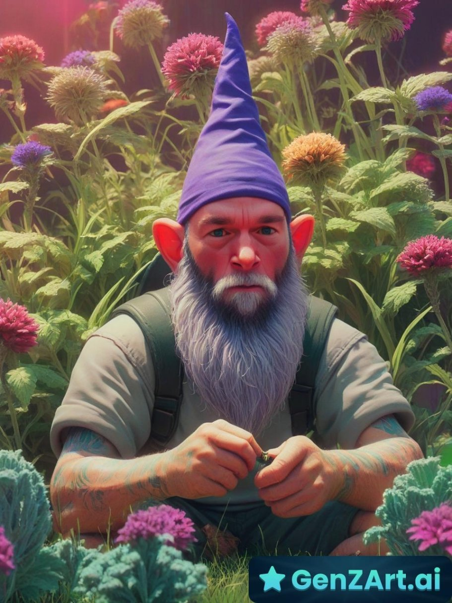

Life № 1 — The Gnome Era
Guardian of the Garden
Before the trucks, before the trailers — there was the garden. Jason has been watching over Oklahoma flower beds since roughly the dawn of time. The flowers respect him. The weeds fear him.